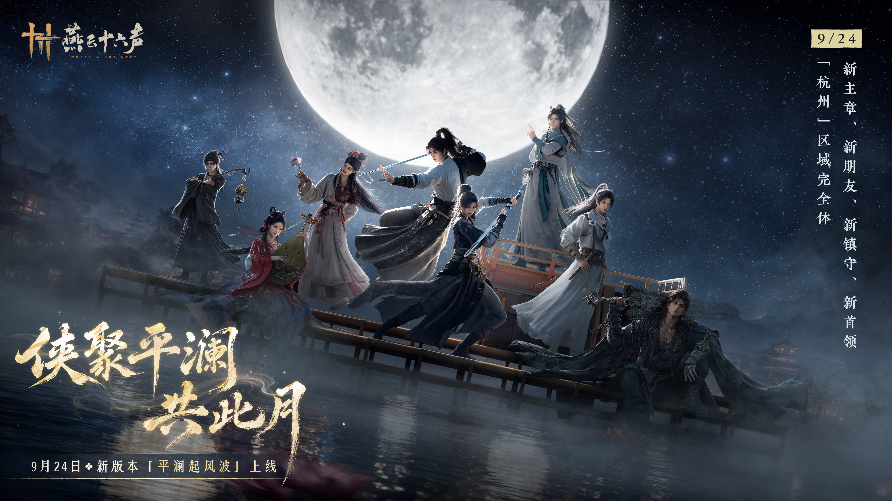
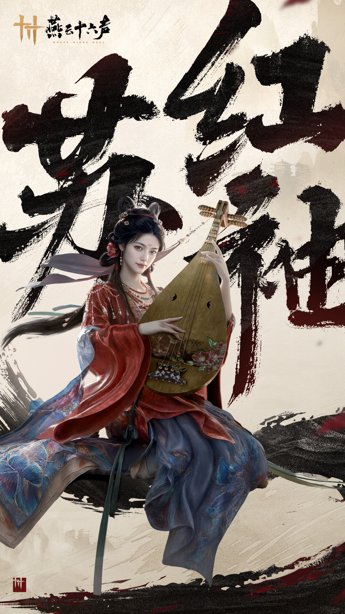
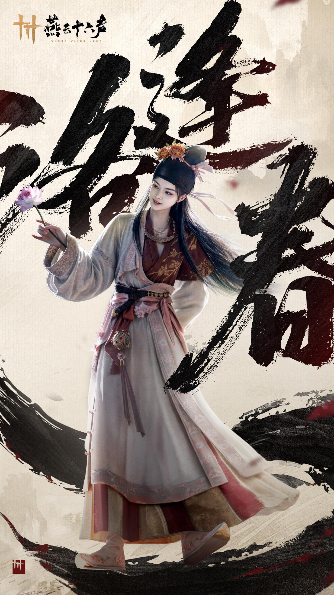
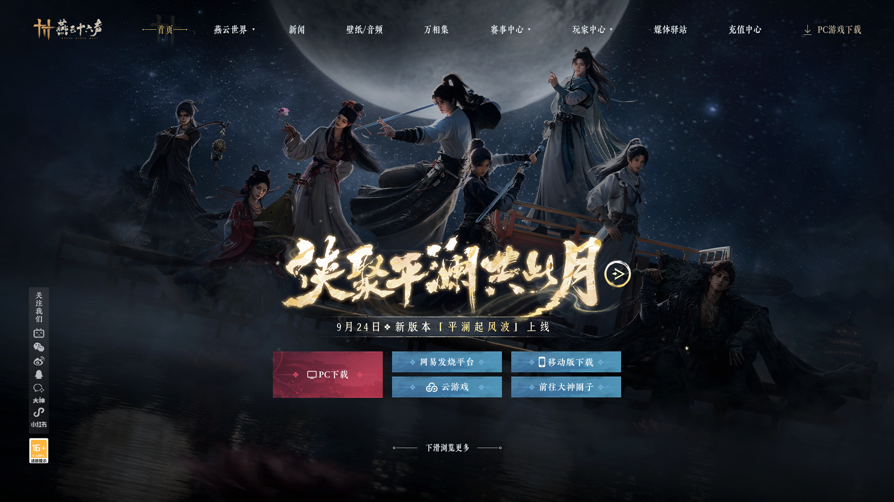
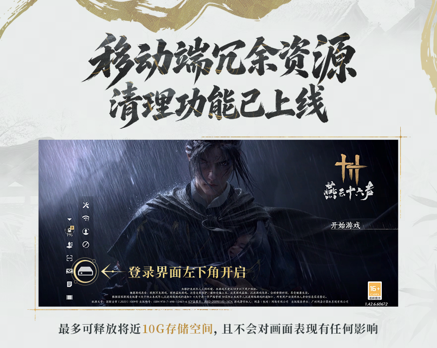

[소식 · 캐릭터 미리보기] 9월 24일丨주요 이야기 재개, 꽃 지는 계절에 그대를 다시 만나다!
9월 24일 새 버전에서 주요 이야기와 친구, 진수, 우두머리가 추가되고 항저우 지역이 완성됩니다.

9월 24일에 출시되는 신규 버전 「잔잔한 물결에 풍파가 일다」는 지금까지의 업데이트 가운데 스토리 콘텐츠가 가장 풍성한 버전 중 하나가 될 예정입니다.
신규 수호 콘텐츠와 풍성한 오픈 월드 탐험 콘텐츠 외에도, 주요 장 스토리와 다섯 개의 지선 스토리만으로도 500분이 넘는 몰입감 있는 경험을 선사할 것으로 예상됩니다.
이 이야기들에서는 여러 주요 인물이 차례로 등장합니다. 동문 간의 우정에서 시작해, 협객은 그들과 서로를 알아가며 점차 더욱 깊은 인연을 맺게 됩니다. 운명의 실이 여러분을 끌어 서로 이어 주지만, 이야기가 끝내 어디로 향할지는 아무도 모릅니다. 그래도 적어도 앞으로의 여정에서는 누군가가 여러분과 나란히 길을 떠날 것입니다.
새로운 장이 가까워졌습니다. 협객 여러분은 강남으로 길을 떠날 때 공개된 예고 영상을 통해 그들이 처음 모습을 드러낸 순간을 다시 감상해 보세요.
오늘부터 그들을 한 명씩 소개하며, 우선 그들의 성격 한 자락을 보여 드립니다. 하지만 첫 만남은 어디까지나 시작일 뿐입니다. 진정한 ‘이심전심’는 협객이 직접 그들과 동행해야 비로소 맺어질 수 있습니다.

*사전 연구 단계의 효과 시연입니다. 최종 출시 내용을 기준으로 삼아 주세요.
소홍수: 꽃 앞뒤로 거울을 비추니, 꽃 같은 얼굴이 서로를 비추네.
서원에 가서 공부해야 한다는 말을 들은 소홍수는 먼저 곁에 있던 사촌 동생 장미에게 물었다. “학교에 가면 뭘 해야 해?”
장미가 대답하기도 전에 소홍수는 그녀를 끌고 문밖으로 나갔다. 다른 건 천천히 물어도 된다. 어차피 밖에 나가 사람들을 만나야 하니, 먼저 옷 몇 벌은 마련해야 했다.
옷가게에서 소홍수는 호수빛 초록색 옷 한 벌이 마음에 들었고, 옆에 있던 짙은 무늬 비단옷도 좋다고 생각했다. 구리 거울 앞에서 번갈아 대 보기를 몇 번이나 했지만 좀처럼 결정하지 못했다. 하지만 주인아주머니가 값을 부르자 망설임이 사라졌다.
“이걸로 할게요.”
소홍수는 구리 거울 앞에서 반 바퀴 돌고는 고개를 숙여 소매의 짙은 무늬를 쓰다듬었다. 볼수록 마음에 들었다.
“봐, 이런 옷감이야말로 나한테 잘 어울려.”
함께 서원에 다닐 공자와 귀녀가 많다고 들었다. 처음 만나는 자리니 더 단정하게 입어야 했다. 주인아주머니가 새 비단 한 필을 펼치자, 소홍수는 곧 손을 뻗어 눌렀다. “이것도 살래요.”
장미는 이미 골라 둔 옷들을 바라보며 말했다. “언니, 이게 벌써 세 번째예요.”
“하지만 내가 학교에 3일만 다닐 것도 아니잖아.”
말이 끝나자마자 소홍수의 시선은 또 장 위의 비녀 장식에 사로잡혔다.
쑤훙슈(苏红袖)는 꽃가지를 하나 집어 들어 빛에 비춰 자세히 살펴보고는 관자놀이 옆에 대 보았다. 그러고서야 여주인에게 물었다.
“이건 비싼가요?”
여주인이 비싸다고 하자, 그녀는 웃었다.
“그럼 이걸로 할게요.”
장미(蔷薇)가 물었다. “언니, 왜 비싼지만 물어봐요?”
“비싼 물건이 예쁘지 않을 리가 있겠니?”
그녀는 당당하게 말하고는 고개를 돌려 창웨이에게 보였다. 곁에 있던 여주인이 그녀에게 잘 어울리고 피부색도 돋보이게 한다고 칭찬하자 더욱 기뻐하며, 다른 보요(步摇) 하나도 함께 골랐다.
문을 나서기 직전, 쑤훙슈는 다시 진열대로 돌아가 방금 함에 넣었던 진주 장식 꽃을 꺼냈다.
“옷은 쑤 씨 댁으로 보내 주세요. 이 가지는 포장하지 않아도 돼요. 꽂고 갈게요.”
……
서원(书院)의 물다리 옆에서 리라오싼(李老三)은 신이 나서 이야기하고 있었다. 한창 흥이 오른 대목에서는 몇 사람을 향해 눈썹을 치켜올리기까지 했는데, 마치 이보다 더 빈틈없는 방법은 없다는 듯했다.
장미는 그를 보고 언니를 보며 몇 번이나 말을 꺼내려다 그만두었다. 하지만 쑤훙슈는 진지하게 듣고 거듭 생각한 뒤, 마침내 신중하게 고개를 끄덕였다.
“그 말도 일리가 있네요.”
그녀는 다리 아래를 힐끗 내려다보고, 고개를 숙여 치맛자락을 단정히 여민 뒤 관자놀이의 비녀 장식을 바로잡았다. 조금 전까지만 해도 모든 것이 잘 갖춰졌다고 생각했는데, 막상 입을 열려니 자기 이름조차 입술 끝에서 몇 번이고 조용히 연습해야 했다.
“소녀는…… 전당(钱塘)의 소홍수라고 합니다.”


뤄펑춘(洛逢春): 아름다운 이를 만나기란 어렵고, 마음을 알아주는 벗을 찾기란 어렵다
낙봉춘이 항저우에 왔을 때는 봄이었다. 그녀는 배가 불룩한 도자기 항아리를 안고 서호의 아름다움을 한껏 감상했다. 서호는 참으로 아름다운 곳이었다. 그녀는 문득 그 사람의 바람을 이해하게 되었다.
배를 타고 가던 중, 뱃사공이 호기심을 품고 그녀의 내력을 물었다.
“항저우에 볼일이 있어서 왔어요. 온 김에 놀기도 하고요. 항저우는 참 좋은 곳이에요. 아름다운 경치와 미인이 모두 빠짐없이 있죠.”
“여협께서는……미인도 좋아하십니까?”
“그럼요. 미인을 감상하는 일은 아주 중요한 일이지요. 절세의 기서 한 권을 깨우치는 것만큼이나 정신을 많이 써야 하거든요.”
뤄펑춘은 진지하게 말했다. “미인이란 여와가 솜씨를 발휘해 빚어낸 작품이자 천지가 오묘하게 만든 존재예요. 세상에 있다면 당연히 찬찬히 감상해야죠. 이를테면 서호는 항저우 사람들에게 들으니 맑은 날의 서호, 비 오는 날의 서호, 안개 낀 날의 서호가 때마다 저마다 아름답다더군요. 미인도 마찬가지예요! 아리따운 여인은 물처럼 부드럽고, 군자는 산처럼 의연하며, 백발 노인에게는 맑은 기품이 있고, 푸른 옷을 입은 이는 호방하고 거리낌이 없지요…… 마음을 쓰고 공을 들여 제대로 바라보지 않는다면 이 세상의 훌륭한 조화를 저버리는 셈 아닌가요?”
뱃사공은 깊이 공감했다. 꼭 만각롱의 계수나무 꽃향기 같지 않은가? 고관대작이든 평범한 백성이든 가을이면 와서 그 달콤한 향기를 깊이 들이마신다.
뤄펑춘이 크게 웃었다. “내 마음을 알아주는 분이시군요, 형님! 내 마음을 알아주는 분이세요!”
배가 호수 한가운데 이르렀을 때, 뤄펑춘은 도자기 항아리의 뚜껑을 돌려 열고 조심스레 호수에 뿌렸다. 하얀 가루는 손가락 사이의 모래처럼 순식간에 흘러가 버렸다. 정신을 차렸을 때는 이미 붙잡아 둘 가능성이 모두 끊긴 뒤였다.
그녀는 붐비는 시장에서도 미인의 기척을 알아차릴 만큼 예민했고, 숲속에서 막 피어난 꽃 한 송이를 찾아낼 수도 있었다. 하지만 온 힘을 다해도 운명의 징조는 볼 수 없었다. 서호의 물은 일렁이며 흘렀고, 햇살은 수면을 비췄다. 모든 것이 여전히 부드럽고 고요했다.
그녀는 항저우에 남았다. 그 뒤로 평란서원에는 몇 번이나 유급했는지 모를 사저가 한 명 늘었다. 항저우의 학도들을 모두 모아 견주어도, 그녀가 가장 관례에 얽매이지 않는 사람일 가능성이 컸다. 학재에 앉아 공부하기보다 곡을 들으러 다니는 일이 많았고, 스승을 만나기보다 미인을 쫓아다니는 일이 많았다. 하지만 그녀의 이유에는 반박할 틈이 없어 보였다:
아름다운 이를 만나기란 어렵고, 마음을 알아주는 벗을 찾기란 참 어렵구나!

달이 사라지고 있다고?!
거위가 긴급히 알립니다:
공식 홈페이지 첫 화면의 저 둥근 달이, 어찌 된 일인지 갑자기 어두워졌습니다.
거위의 말에 따르면, 거위는 달 조각 몇 개가 여기저기 흩어지는 것을 직접 목격했다고 합니다. 협객 여러분께서는 가서 자초지종을 알아봐 주세요.

